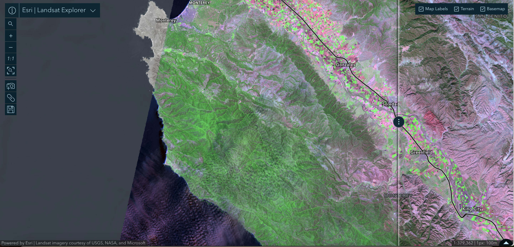
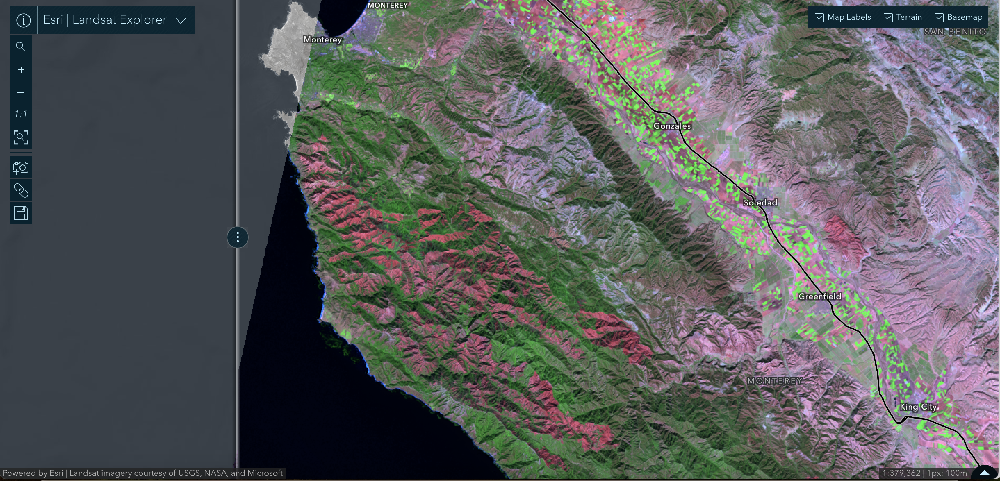
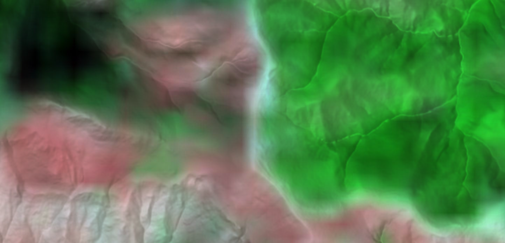
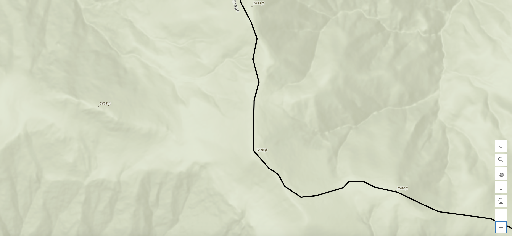
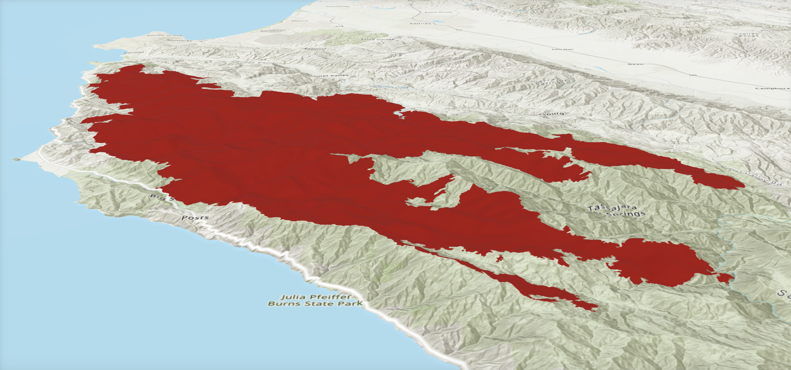

Lab 03 · October 2026
One Fire, Three Frames: How a Web Map Made the Soberanes Fire 54% Bigger
The question
How many square kilometres burned in the 2016 Soberanes Fire in Monterey County, California? More importantly, how much can that number change depending on the projection used to measure the boundary, the resolution of the imagery used to create it, and the terrain across which the fire burned?
The data
The main dataset is the Soberanes_Perimeter feature layer published by Teach_with_GIS through Esri's ArcGIS Online. The layer contains one feature with three fields: Id, Shape__Area, and Shape__Length.
For imagery, I used the Landsat archive in Esri's Landsat Explorer with the short-wave infrared renderer. The imagery has a native cell size of 30 m. I compared a pre-fire scene from June 20, 2016 with a post-fire scene from October 26, 2016. The fire itself burned from July 22 to October 12, so neither image was taken during the fire. The two scenes are 128 days apart, or exactly eight 16-day Landsat cycles, which is consistent with them coming from the same orbit track.
For elevation, I used the default world elevation surface in ArcGIS Scene Viewer. I also used the incident record's reported figure of 132,127 acres as a reference for comparison.
Two things became important once I looked more closely at the data. First, the coordinate system is not obvious from the attribute table. The Shape__Area value is 824,638,034 m², which initially looks like a straightforward measurement of the fire's area. However, the service definition identifies the coordinate system as WKID 102100, the current WKID for WGS 84 / Pseudo-Mercator, or Web Mercator. This means the stored area is a planar measurement in the Web Mercator frame rather than a direct measurement of area on the Earth's surface.
Second, the perimeter appears to have been created from raster data. The lab's service query reports 690 rings in WGS 84 and 755 in Web Mercator, with most of the smaller rings being less than one 30 m Landsat cell. The polygon therefore contains much more geometric detail than the original imagery could directly resolve. This matters more for the shape and perimeter of the boundary than for the overall burned area.
The method
I opened the layer in ArcGIS Online Map Viewer and read the service definition at the layer's
/query?where=1=1&outFields=*&returnGeometry=false&f=pjson endpoint. I then added
this Arcade expression to the pop-up. Area does planar arithmetic on the stored (Web Mercator)
coordinates; AreaGeodetic measures on the WGS 84 ellipsoid.
// Two ways to measure one polygon.
var planar = Area($feature, 'square-kilometers');
var globe = AreaGeodetic($feature, 'square-kilometers');
var acres = AreaGeodetic($feature, 'acres');
return 'planar ' + Round(planar, 3) + ' km2'
+ TextFormatting.NewLine
+ 'geodetic ' + Round(globe, 3) + ' km2'
+ TextFormatting.NewLine
+ 'geodetic ' + Round(acres, 0) + ' acres'
+ TextFormatting.NewLine
+ 'ratio ' + Round(planar / globe, 4);
The pop-up returned planar 824.323 km², geodetic 533.891 km²,
131,927 acres and ratio 1.544. I traced the burn by hand with Map Viewer's
Measurement tool (twelve clicks; this tool measures geodetically, so it compares with
AreaGeodetic). Planar UTM 10N (533.929 km²) and California Albers (534.182 km²) are the
brief's given values, because a layer I don't own cannot be reprojected in ArcGIS Online.
Projection prediction. Web Mercator inflates linear scale by sec(φ) and area by sec²(φ). I computed sec²(φ) − 1 for six latitudes before comparing with the measurement. Grid band. I took the uncertainty in area as the geodetic perimeter (441.955 km) times the cell size, against the geodetic area (534.182 km², the brief's value, which is 0.05% above my own reading). Terrain. In Scene Viewer I drew two Elevation Profile lines across the burn, read the average slope of each, and multiplied the geodetic area by 1/cos(slope). Vertical datum. I read geoid separation N from the GeographicLib geoid calculator under EGM2008, EGM96 and EGM84, and converted heights with h = H + N. The conversion in the write-up uses EGM2008, the most recent of the three.
The map

Figure 1a. Before: Landsat short-wave infrared imagery from 20 June 2016, showing the area before the Soberanes Fire. Vegetation appears consistently green along the coast south of Monterey toward Big Sur, with no visible burn scar. The image is shown at the same scale and projection as Figure 1b (Web Mercator; 1:379,362; 1 screen pixel = 100 m).
Figure 1b. After: Landsat short-wave infrared imagery from 26 October 2016, showing the burn scar across the Santa Lucia Range south of Carmel toward Big Sur. The image uses the same scale and projection as Figure 1a. The isolated red patch east of Soledad is outside the Soberanes perimeter and is not included in this analysis.
Figure 2. Close-up of the 26 October 2016 post-fire Landsat scene at a burn boundary. The image is magnified well beyond the native 30 m cell size. The transition from burned to unburned vegetation extends across roughly one to two cells rather than forming a sharp line. Landsat Explorer interpolates between cells, making the underlying raster structure appear as a soft transition. Cell size: 30 m × 30 m. Display frame: Web Mercator.
Figure 3. Published Soberanes Fire perimeter shown as an outline over a terrain basemap at approximately the same location as Figure 2. The boundary appears as a continuous line of straight segments, so the underlying 30 m raster resolution is not visible. Spot elevations are shown in feet. Display frame: Web Mercator; stored geometry: EPSG:3857.
Figure 4. Oblique 3D view of the Soberanes Fire perimeter draped over the world elevation surface, looking inland from the Pacific. The perimeter crosses the steep Santa Lucia Range, which rises from the coast toward the crest over a relatively short distance. The scene is for visualization only; the perimeter geometry is stored in EPSG:3857, while area calculations in this analysis use geodetic measurements on WGS 84.What I found
Frames table
| Frame | Area (km²) | vs. geodetic | How I got it |
|---|---|---|---|
| Web Mercator, planar | 824.323 | +54.4% | Area(). Shape__Area says 824.638 (+0.04%), which I did not investigate. |
| WGS 84 ellipsoid, geodetic | 533.891 | 0 | AreaGeodetic() |
| My hand-traced polygon | 542.68 | +1.6% | Measurement tool, twelve clicks |
| Published incident figure | 534.699 | +0.15% | 132,127 acres × 0.00404686 |
| UTM zone 10N, planar | 533.929 | +0.01% | Given |
| California Albers, planar | 534.182 | +0.05% | Given |
The main comparison shows a large difference between the measurements. The Web Mercator planar calculation gives 824.323 km², while the geodetic calculation gives 533.891 km². The UTM, California Albers, and agency figures are all very close to the geodetic result. In fact, four measurements agree within 0.15%.
This suggests that the large discrepancy is mainly caused by the coordinate system rather than by the boundary itself. My hand-traced polygon was only 1.6% larger than the geodetic calculation, despite using only twelve vertices. In contrast, the Web Mercator value was 54% larger. The agency's reported acreage also agrees closely with the geodetic and equal-area measurements. I would still check the incident record's metadata before claiming exactly how the agency calculated its number, but the agreement strongly suggests that it did not use the Web Mercator planar area.
The projection result was also close to what I expected mathematically. At the fire's latitude of about 36.3°, sec²(φ) is approximately 1.541, meaning Web Mercator should inflate the area by about 54%. My measured ratio was 1.544, which is within about 0.2% of that prediction. This is useful because it shows that the discrepancy is not an arbitrary software error. It is a predictable consequence of measuring area in Web Mercator at this latitude.
Sensitivity 1: the same polygon at six latitudes
| Place | Latitude | sec²(φ) | Web Mercator areal inflation |
|---|---|---|---|
| Equator | 0.000° | 1.000 | 0% |
| Gibson Desert, Western Australia | −23.285° | 1.185 | +18.5% |
| This campus, Pudong | 31.162° | 1.366 | +36.6% |
| Madeira, Portugal | 32.750° | 1.414 | +41.4% |
| Soberanes Fire, California | 36.326° | 1.541 | +54.1% |
| Fairbanks, Alaska | 64.840° | 5.532 | +453.2% |
The projection effect changes substantially with latitude. At the equator, Web Mercator produces no areal inflation, while at higher latitudes the inflation becomes much larger. At the Soberanes Fire's latitude, the expected inflation is about 54%. At Fairbanks, Alaska, it would be more than 450%.
Sensitivity 2: the same fire at four cell sizes
Band = perimeter × cell size, using the geodetic perimeter (441.955 km) and area (534.182 km²).
| Sensor | Cell size | Band (km²) | Share of area |
|---|---|---|---|
| Sentinel-2 | 10 m | 4.420 | 0.83% |
| Landsat 8-9 | 30 m | 13.259 | 2.48% |
| MODIS | 250 m | 110.489 | 20.7% |
| A coarse global product | 500 m | 220.978 | 41.4% |
The grid introduces a different kind of uncertainty. Using the perimeter and cell size to estimate a boundary band, the 30 m Landsat data produce an uncertainty of about 13.3 km², or 2.5% of the fire's area. This is much smaller than the 54% projection difference.The relationship changes with coarser imagery. A 250 m product would produce an estimated uncertainty of about 20.7%, while a 500 m product would reach about 41.4%. At that point, the grid effect becomes much closer to the projection effect. The ranking is therefore not universal. It depends on both the location of the fire and the resolution of the data.
The fire boundary ultimately comes from decisions made at the scale of individual raster cells. A feature smaller than one cell may disappear, while another feature may occupy an entire cell. The polygon does not tell me exactly what happened within those cells. The geometry also contains a surprisingly large amount of detail compared with what the imagery could have resolved. The isoperimetric ratio is only about 0.033–0.034, compared with 1 for a perfect circle. A circle with an area of about 534 km² would have a circumference of roughly 82 km, while the stored geometry has a perimeter of about 442 km. This does not mean that the area is necessarily wrong, but it does make me much less confident in the perimeter as a precise measurement. I would therefore report the area while clearly stating the 30 m resolution, but I would not present the 442 km perimeter as an exact ground measurement.
Geoid separation (N, metres)
| Point | EGM2008 | EGM96 | EGM84 | Spread |
|---|---|---|---|---|
| Soberanes Fire | −32.9779 | −34.0791 | −34.7582 | 1.7803 |
| This campus | +12.1533 | +11.4482 | +11.6075 | 0.7051 |
| Everest | −28.4939 | −28.7408 | −30.4587 | 1.9648 |
With h = H + N, a receiver reporting an ellipsoidal height of 900 m at the fire sits at H = 900 − (−32.978) = 932.98 m orthometric under EGM2008. EGM96 gives 934.08 m and EGM84 934.76 m. The conversion needs a model, and the choice of model moves the answer by up to 1.8 m, so the model belongs in the methods. Runoff follows gravity, not an ellipsoid, so a drainage model needs the orthometric height H. Using the ellipsoidal height would put the surface tens of metres off, 33 m at the fire, and the error varies across the area.
Terrain: area on a slope
My two elevation profiles gave average slopes of 20.7° and 19.7°, so the correction factors are 1.0690 and 1.0622. Applied to the geodetic area of 534.182 km², the ground surface is at least 567.4 to 571.0 km², about 6 to 7% more than the planimetric shadow. This is a lower bound, because applying the cosine to an average slope understates surface area on steep ground. Of the three effects the terrain is second: 6 to 7% against 54% for projection and 2.5% for the grid.
One mountain, two numbers
Nepal's pre-2020 height was 8,848 m (Survey of India, 1954), measured to the snow and ice on top. China's 2005 survey gave 8,844.43 m, measured to the rock beneath. The two governments announced a joint figure of 8,848.86 m on 8 December 2020. The gap is 3.57 m, and China's own 2005 survey put the snow and ice at about 3.5 m, so almost all of it was disagreement about what "height" means, not about measurement quality.
Written reflection
I would publish 533.9 km² (about 131,900 acres), measured geodetically on the WGS 84 ellipsoid from the 30 m Landsat-derived boundary. Before publishing it, I would check the layer’s spatial reference, make sure the area was measured geodetically rather than as a planar Web Mercator area, and compare it with an equal-area projection and the agency’s reported 132,127 acres. These checks matter because the different measurements agree within about 0.15%, while the attribute table gives a very different result. If I had simply trusted the attribute table, I would have published 824.6 km², which is about 290.7 km², or 54% too high. The attribute value looks precise, but the problem is that it is measuring the polygon in Web Mercator rather than measuring its actual area on the Earth’s surface.
For this fire, I would rank the three sources of disagreement as projection first, terrain second, and grid resolution third: 54% from Web Mercator, about 6–7% from the slope of the terrain, and about 2.5% from the 30 m grid. That ranking would change if the fire were closer to the equator, where Web Mercator’s area inflation becomes much smaller, or if the imagery were much coarser; for example, the 500 m grid produces an uncertainty band of about 41%. Steeper terrain could also make the terrain effect larger than the projection effect. Of these three, terrain is the one I could not have discovered from the file itself, because the polygon is two-dimensional and contains no elevation information.
One use where this difference matters is fire-agency budgeting for suppression costs. If planners used the Web Mercator acreage without realizing it was inflated, they would be dividing the roughly $260 million Soberanes Fire cost across too many acres. That gives about $1,280 per acre instead of roughly $1,970 per acre using the geodetic area. In practice, this could make a fire look less expensive to suppress per acre than it really was and could affect how agencies benchmark costs or plan resources for future fires. The people most affected would be fire-agency budget planners and communities that depend on those resources, because an inflated acreage denominator could make future funding needs look smaller than they actually are.
What this does not show
There are several limits to this analysis. The perimeter comes from 30 m imagery, so I would not interpret features smaller than that resolution as precise. This is especially important for the 442 km perimeter, which is much more sensitive to small boundary details than the overall area.
The terrain correction is also only an estimate based on two elevation profiles. It is not a full surface-area calculation across the entire fire. Similarly, the geoid comparison shows how much the choice of model can matter, but I did not validate the model against ground control.
There are also some things I did not independently verify. The ring counts came from the lab brief, and I did not rerun them myself. I did not investigate the small difference between Shape__Area and the Area() result. Finally, the Landsat scenes are four months apart, so the post-fire image could contain changes that occurred after the fire itself. I used the published perimeter rather than trying to classify those changes independently.
Overall, the most important limitation is that these numbers should not be treated as equally certain just because they are reported to several decimal places. The projection, imagery resolution, terrain, and measurement method all describe different parts of the uncertainty. For this fire, the projection is clearly the largest issue, but that conclusion depends on the specific location and data resolution used.
AI use: AI-assisted for checking my Arcade syntax, my calculations, and the structure of this entry, using Claude. I verified it by comparing the returned geodetic area against the Measurement tool, the UTM and Albers values, and the published acreage, and by recomputing every table independently. The frames, the measurements and the interpretation are my own.